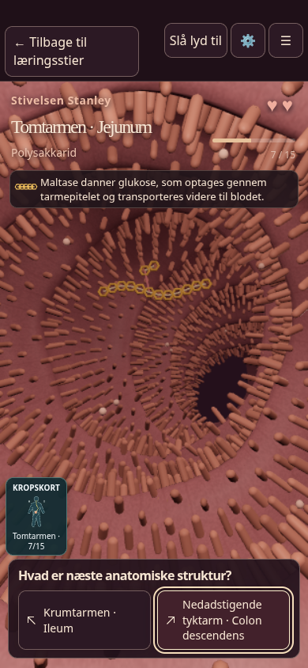
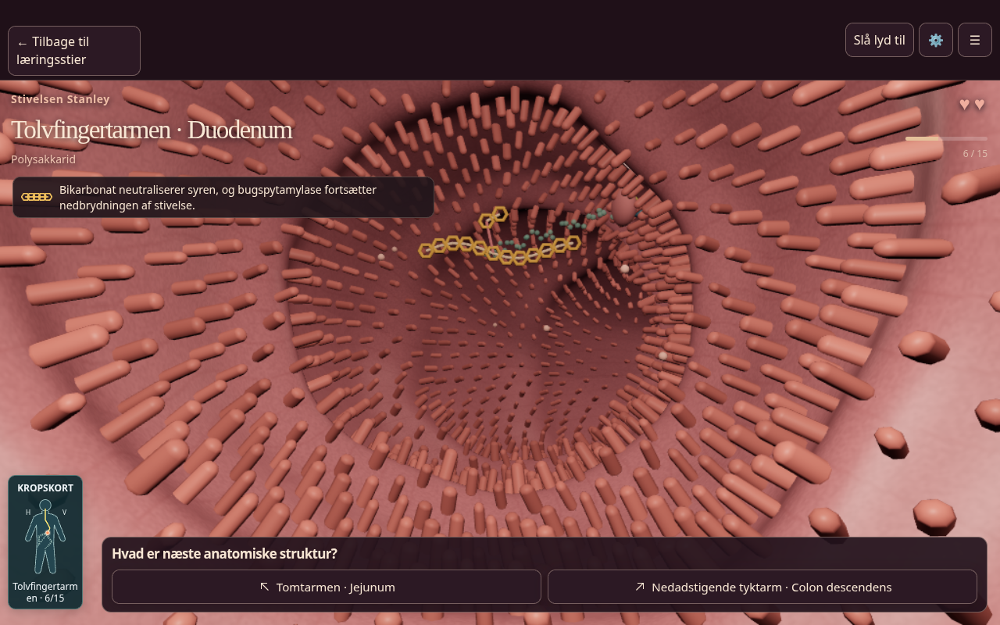
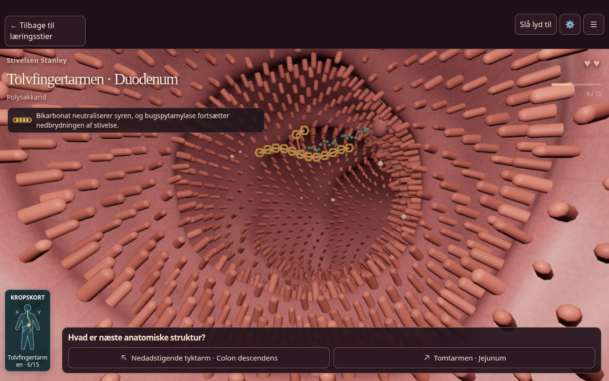
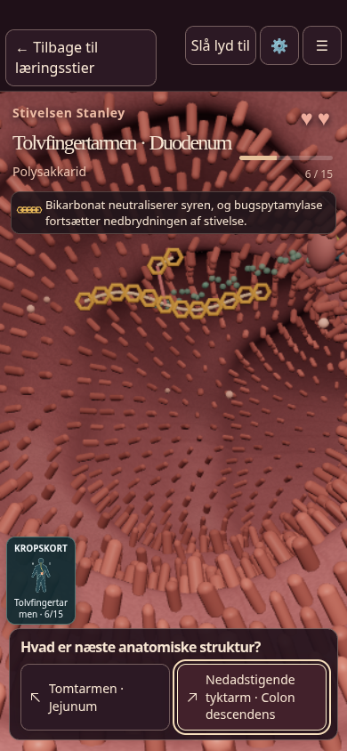
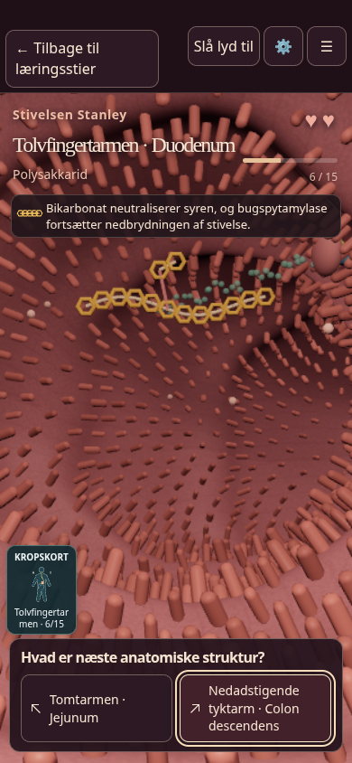
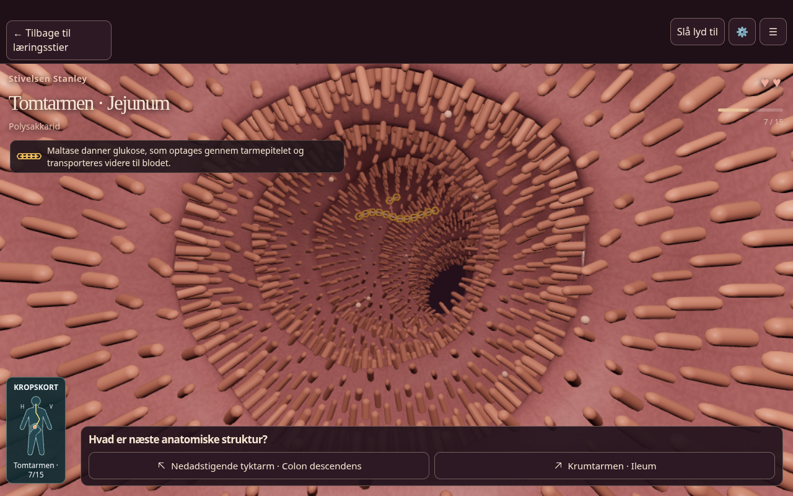
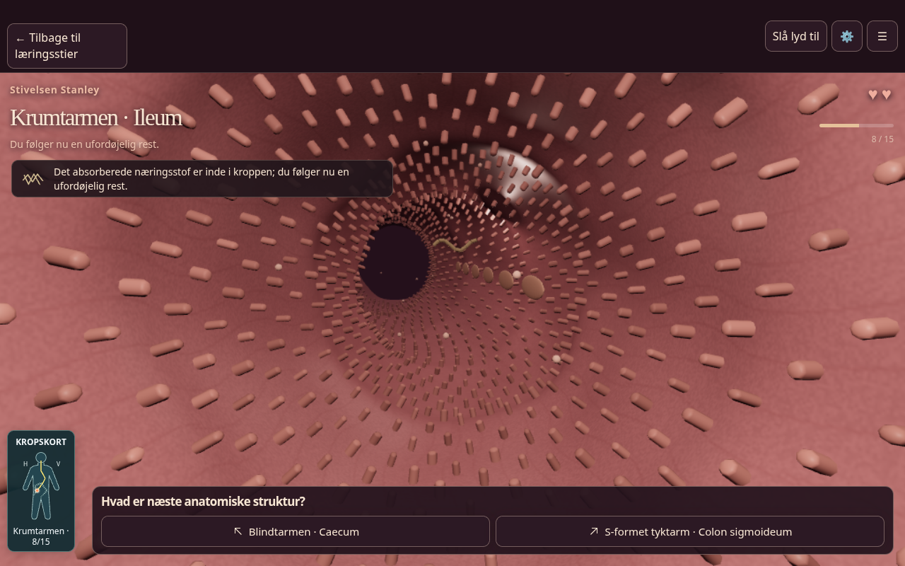
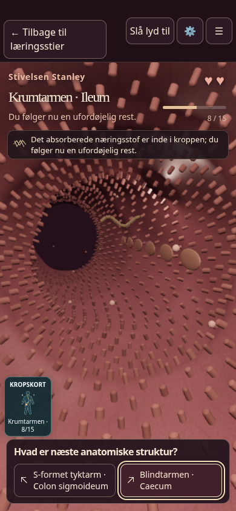
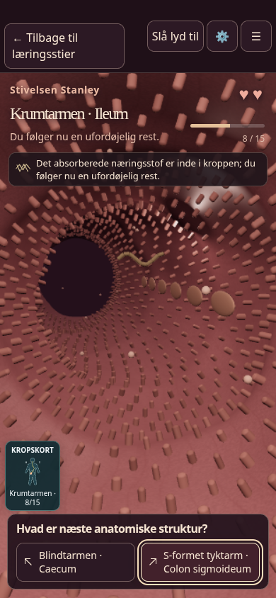

Venstre: fase B før optimering. Højre: fase B.1. Samme kamera, vinduesstørrelse, pixelratio 0,8 og stillestående animationspose. FPS er målt separat med bevægelse slået til.
Alle 2.200/3.200/1.500 villi er bevaret. Se især de afrundede nære former, tætheden og de regionale forskelle. Fjerne villi har færre polygoner; de er ikke fjernet eller gjort tyndere. Svarmulighedernes rækkefølge kan variere, fordi spillet blander dem.
Se de moderate folder og kortere villi end i jejunum.


Se de moderate folder og kortere villi end i jejunum.


Se de højeste folder, lange villi og den tætte fordeling med 3.200 villi.

Se de højeste folder, lange villi og den tætte fordeling med 3.200 villi.

Se de lavere folder, kortere villi og det lymfoide væv.

Se de lavere folder, kortere villi og det lymfoide væv.


Stillbilleder dokumenterer ikke bølgebevægelsen. Bevægelsen og de tre molekylerejser kontrolleres desuden i browser-tests. Målinger og begrænsninger er beskrevet i ../fase-b1-rapport.md.